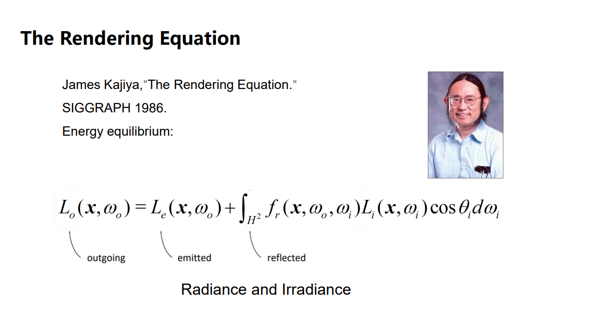
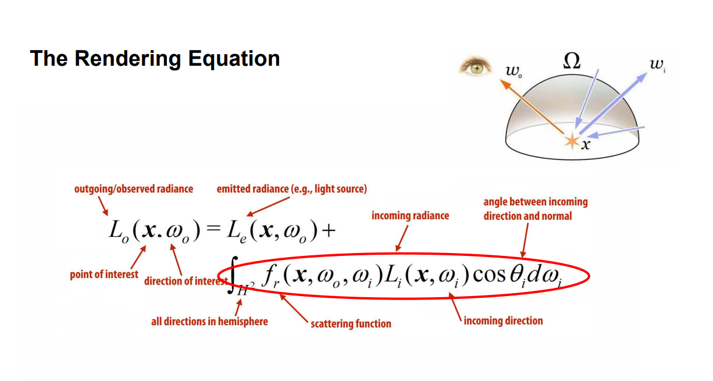

渲染方程

这是著名的Render Equation ，《GAMES 101》中花了大量的篇幅来解释这个公式。我们今天几乎做的所有Rendering 相关的工作都是去满足这个Render Equation 。但是至今为止，没有任何一款游戏引擎能够做到实时的完全按照Render Equation来进行渲染，我们能做到的只是在无限的逼近它。

在具体实践中，这个方程会变得非常复杂：
- 物体会被来自四面八方的光照射
- 物体也会向四面八方的光照射
- MultiBounce：光路上可能会有很多次反射和折射
- 不同材质的物体，会有不同的反射和折射效果
- 次表现反射：透明物体，光射入物体后会在物体内部反射，并另在一个位置射出
- 高光
- color bleeding
- ....
最重要的是，这些都必须在有限的资源、有限的时间、有限的算力下完成。
挑战
- 1a: Visibility to Light。 人眼通常要靠明暗关系、摭挡关系来判断层次结构。但是Shadow很难做。
- 1b: 光源很复杂。
有平行光（无穷远，例如太阳）、点光源、锥形光源（例如路灯）、面光源
光有不同的强度、方向
关于radiance和irradiance看这里